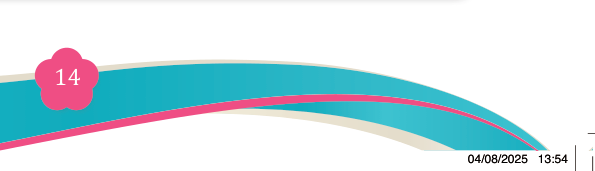
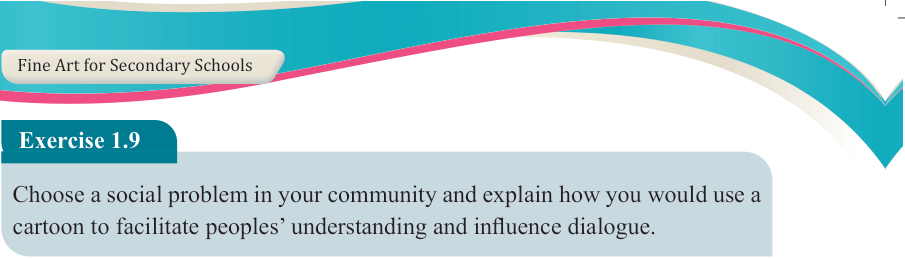
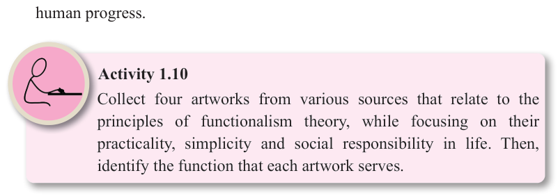

Fine Art for Secondary Schools

14

Student’s Book Form Two

Exercise 1.9
Choose a social problem in your community and explain how you would use a cartoon to facilitate peoples’ understanding and influence dialogue.
Principles of functionalism theory
Functionalism in art emphasises that the primary value of art lies in its functional
use and purposes rather than its aesthetic qualities alone. Functionalism emerged in the 20th century, particularly within design and architecture and has influenced various artistic disciplines, including fine art. Functionalist art can be created according to the principles of functionalism theory in art, namely:
(a) Purpose over decoration: Art should serve a practical and utilitarian function.
According to this theory, artwork is created with a specific purpose in mind,
such as conveying information, fulfilling a social role or enhancing daily life.
(b) Simplicity and utility: Artworks should focus on simplicity, efficiency and
usability. In this sense, the design or structure of an artwork should be shaped
by its intended use or purpose rather than decorative considerations.
(c) Integration of art and life: Art should be integrated into daily life and societal
function. It does not exist as an isolated or ornamental object but should
contribute meaningfully to the way people live and interact with their
environment.
(d) Authenticity of materials and construction: Materials should be appropriate for the purpose and the construction of the artwork should be truthful to the
materials. Unnecessary embellished or disguising materials should be avoided.
(e) Social responsibility: Art should contribute to the societal need, seen as a
tool for addressing social problems, improving conditions and facilitating
human progress.

Activity 1.10
Collect four artworks from various sources that relate to the principles of functionalism theory, while focusing on their practicality, simplicity and social responsibility in life. Then, identify the function that each artwork serves.
04/08/2025 13:54